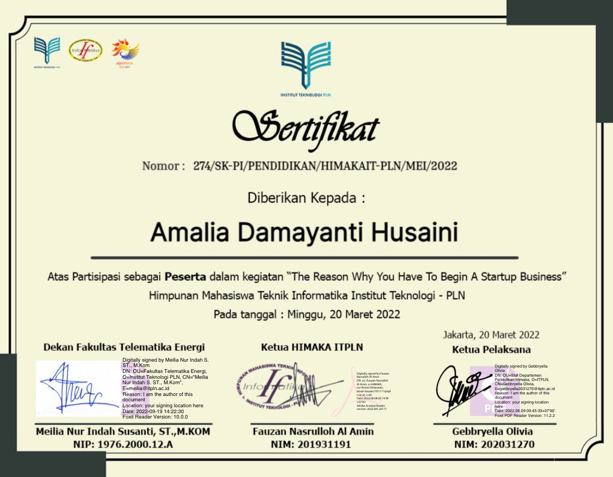

Aktivitas
Workshop "The Reason Why You Have To Begin A Startup Buisness"
 Ini merupakan kegiatan dimana diajarkan untuk bisa membuka bisnis. Yang mana workshop ini diselenggarakan oleh HIMAKA.
Workshop "WEB Architecture as a Form of Implementation of the ASP.Net Core"
 Ini merupakan workshop untuk membuat sebuah Form dengan Web Architecture dari Pengimplementasian ASP.Net Core. Ini diselenggarakan oleh Lab.Software Architecture & Quality (SAQ).
Ini merupakan workshop untuk membuat sebuah Form dengan Web Architecture dari Pengimplementasian ASP.Net Core. Ini diselenggarakan oleh Lab.Software Architecture & Quality (SAQ).
BEES (Basic English Education Standarization)
Ini merupakan pengambilan sertifikat yang mana guna untuk pemenuhan syarat untuk kelulusan nanti. Yang diselenggarakan oleh Lab.Language Development Center (LDC).
PERJUSA
Ini merupakan kegiatan tahunan pada saat SMA, yang mana guna melatih diri kita untuk menjadi pribadi disiplin, mandiri dan bertanggung jawab. Kegiatan ini diselenggarakan oleh Panitia SMA Negeri 110 Jakarta Utara.
Lomba Marching Band Di Kodam Jaya
Ini merupakan perlombaan Marching Band yang mewakili kota Jakarta Utara. Kegiatan ini diselenggarakan oleh TNI di Kodam Jaya